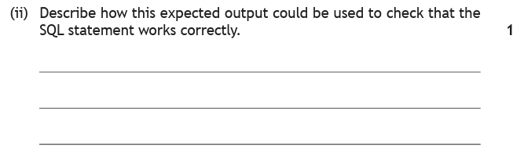
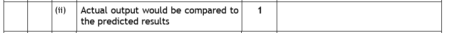
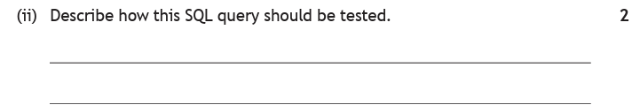
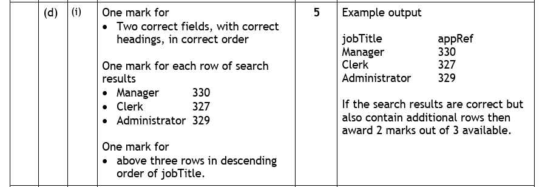

Introduction
You can now write every kind of query the course asks for. This page is about the two questions that come after you have written one:
- Testing — does the query do what I intended?
- Evaluation — does it do what the user asked for?
Those sound like the same question and they are not, which is exactly why the course separates them. A query can pass its test perfectly and still be the wrong query. If someone asks for the highest scorers and you write a query that lists the lowest, it will return precisely the records you predicted — your test passes — and the answer is still useless to them.
Testing is mechanical. Work out what the query should produce, run it, compare. If the two match, it passes.
Evaluation is judgement. Go back to what was originally asked and decide whether this query serves it.
Key Terms
The Database We Will Use
The teaching examples use the school database from the SELECT and joins pages. The past-paper questions bring their own.
| pupilID | pupilName | dateOfBirth | yearGroup | house | meritPoints | clubID |
|---|---|---|---|---|---|---|
| P101 | Archie | 14/03/2010 | 4 | Churchill | 42 | C01 |
| P102 | Noah | 02/11/2009 | 5 | Curie | 18 | C03 |
| P103 | Mason | 27/06/2010 | 4 | Montgomerie | 55 | C01 |
| P104 | Christian | 09/01/2008 | 6 | Nightingale | 31 | C02 |
| P105 | Leoni | 18/09/2010 | 4 | Curie | 67 | C04 |
| P106 | Lucienne | 30/04/2009 | 5 | Churchill | 24 | C03 |
| P107 | Erika | 12/12/2011 | 3 | Montgomerie | 49 | C04 |
| P108 | Louie | 05/07/2009 | 5 | Nightingale | 12 | C01 |
| P109 | Matthew | 21/02/2011 | 3 | Curie | 38 | C02 |
| P110 | Riley | 08/05/2010 | 4 | Churchill | 71 | C04 |
| P111 | Harveer | 16/10/2008 | 6 | Nightingale | 26 | C03 |
| clubID | clubName | meetingDay | meetingTime | staffLead | equipmentProvided |
|---|---|---|---|---|---|
| C01 | Chess Club | Monday | 15:30 | Mr Anderson | TRUE |
| C02 | Debating | Tuesday | 13:05 | Ms Hendry | FALSE |
| C03 | Film Making | Thursday | 15:30 | Mrs Kaur | TRUE |
| C04 | Athletics | Wednesday | 16:00 | Miss Lawson | FALSE |
Testing a Query
Testing a query is one of the most predictable questions in the whole course, because the answer is always the same two steps:
- Work out the expected output — read the query against the data and write down the records it should return.
- Run the query and compare the actual output with that expected output. If they match, the query works. If they do not, there is a fault.
That is it. There is no third step, and the marks are awarded for those two ideas however you phrase them.
What a comparison looks like
The head of Curie house wants her pupils listed with the highest merit points first. Working from the Pupil table, the expected output is Leoni on 67, Matthew on 38 and Noah on 18. The query is run, and this comes back:
| pupilName | meritPoints |
|---|---|
| Leoni | 67 |
| Matthew | 38 |
| Noah | 18 |
| pupilName | meritPoints |
|---|---|
| Noah | 18 |
| Matthew | 38 |
| Leoni | 67 |
The two do not match, so the test fails — and notice how easily this one could have been waved through. The right three pupils are there, with the right merit points. Only the order is wrong: the query must have been written ORDER BY meritPoints ASC instead of DESC.
This is why the comparison has to include the order, not just the contents. "The right records came back" is not the same as "the output is correct".

How to tackle it: the question hands you the expected output and asks what you would do with it. There is only one thing to do with an expected output — compare something to it.
So the answer is: run the SQL statement and compare the actual output against the expected output. If they are the same, the statement works correctly.

The marking instructions accept this in a single line — "actual output would be compared to the predicted results". Note the vocabulary is flexible: predicted, expected and anticipated all mean the same thing here, and so do actual and real.
Watch the trap: for one mark, do not write a paragraph about opening the database and clicking Run. The mark is for the idea of comparing actual with expected, and everything else is padding that risks burying it.
1 mark: the actual output would be compared to the expected (predicted) output.

How to tackle it: the same idea as the question above, but worth two marks — and that tells you something important. Two marks means two separate points, so an answer that only says "compare the outputs" is leaving a mark behind.
The two points are the two steps of the method:
- Find the expected output — work out from the data what the query should return.
- Compare it to the actual output — run the query and check the results against that prediction.
Watch the trap: the mark allocation is doing the work here. When this question appears for 1 mark, "compare actual with expected" is enough. When it appears for 2, you must say that you work out the expected output first and then compare. Same method, but you have to spell out both halves. Always let the number of marks tell you how many points to make.
1 mark: find the expected output · 1 mark: compare it to the actual output.
Writing the Expected Output
Testing depends entirely on being able to produce that expected output, and the exam asks for it directly — sometimes for as many as 5 marks. It is worked out by running the query in your head, in the order the database would.
Take the clauses in this order, not the order they are written:
FROM— which table or tables. If there are two, apply the join to work out which records genuinely belong together.WHERE— cross out every record that fails the condition.SELECT— keep only the named fields, as your column headings, in the order they are named.ORDER BY— arrange the surviving rows.
Give the expected output of the following query, run against the Pupil and Club tables above.
SELECT pupilName, clubName, meetingDay FROM Pupil, Club WHERE house = "Churchill" AND Pupil.clubID = Club.clubID ORDER BY pupilName ASC;
How to tackle it: four steps, in the database's order.
Step 1 — FROM and the join. Two tables, linked by Pupil.clubID = Club.clubID. So each pupil is paired with their own club and no other.
Step 2 — WHERE. The condition is house = "Churchill". Reading down the house column, three pupils qualify: Archie (C01), Lucienne (C03) and Riley (C04). Everyone else is crossed out.
Step 3 — SELECT. Three fields, so three columns headed pupilName, clubName, meetingDay, in that order. Now follow each pupil's clubID across to the Club table:
- Archie → C01 → Chess Club, Monday
- Lucienne → C03 → Film Making, Thursday
- Riley → C04 → Athletics, Wednesday
Step 4 — ORDER BY. pupilName ASC means alphabetical: Archie, Lucienne, Riley. Which they already happen to be — but you must check rather than assume.
So the expected output is:
| pupilName | clubName | meetingDay |
|---|---|---|
| Archie | Chess Club | Monday |
| Lucienne | Film Making | Thursday |
| Riley | Athletics | Wednesday |
Watch the trap: it is tempting to skip the join because the WHERE clause has a "real" condition in it too. Skip it and every Churchill pupil is paired with every club — 3 × 4 = twelve rows instead of three, nine of them invented. The join is doing as much work as the house condition.
1 mark for the three correct headings in the correct order · 1 mark for each correct row (3 marks) · 1 mark for the rows being in ascending order of pupilName.
![Exam question part d. The updated Vacancy table shows HR22 Clerk HR 04/06/2019; PD18 Manager Production 28/06/2019; AD36 Administrator Admin 30/06/2019; FN42 Finance Officer Finance 04/07/2019; PD20 Sales Manager Production 10/07/2019. The updated Employee table shows 325 HR22 C P Martin grade 2 licence yes; 326 PD18 G L Wood grade 1 licence yes; 327 HR22 H Patel grade 2 licence no; 328 HR22 B F Lee grade 3 licence yes; 329 AD36 M Aliyev grade 3 licence no; 330 PD18 L M Nowak grade 2 licence no; 331 HR22 S Patel grade 1 licence yes. The SQL statement SELECT jobTitle, appRef FROM Vacancy, Employee WHERE Vacancy.jobRef=Employee.jobRef AND drivingLicence=False ORDER BY jobTitle DESC is implemented. Part i: write the expected output from the SQL statement. Five marks.](../resources/ddd/worked-examples/n5_db_output_q1_companyDB.png)
How to tackle it: exactly the same four steps. The query looks intimidating because everything is on one line, so the first job is to break it into its clauses.
Step 1 — FROM and the join. FROM Vacancy, Employee with Vacancy.jobRef = Employee.jobRef. Each employee is matched to the vacancy they applied for.
Step 2 — WHERE. Besides the join, the condition is drivingLicence = False — the employees whose driving licence box is unticked. Reading down that column, three qualify: 327 H Patel, 329 M Aliyev and 330 L M Nowak. The other four are crossed out.
Step 3 — SELECT. Two fields: jobTitle then appRef, in that order. Note that jobTitle is not in the Employee table at all — it comes across the join from Vacancy, which is why the join matters. Following each employee's jobRef:
- 327 → HR22 → Clerk
- 329 → AD36 → Administrator
- 330 → PD18 → Manager
Step 4 — ORDER BY. jobTitle DESC — reverse alphabetical. Manager, Clerk, Administrator.
So the expected output is:
| jobTitle | appRef |
|---|---|
| Manager | 330 |
| Clerk | 327 |
| Administrator | 329 |

The mark scheme is worth reading closely, because it shows where the five marks actually sit: one for the headings, three for the rows, and one for the sort order. The rows are the bulk of it, but the headings and the order are two easy marks that cost nothing but attention.
Watch the trap: there is a specific penalty spelled out — "if the search results are correct but also contain additional rows then award 2 marks out of 3". That is the mark scheme's way of catching people who forget the join, or who forget drivingLicence = False, and hand in extra rows. Extra rows cost you marks even when every row you needed is present.
1 mark: jobTitle and appRef as headings, in that order · 3 marks: one for each correct row (Manager 330, Clerk 327, Administrator 329) · 1 mark: the three rows in descending order of jobTitle.
Evaluation
Evaluation asks a different question from testing. Not "did it do what I told it to?" but "does it do what was asked for?" — and you answer it by going back to the original request and checking the query against it, point by point.
Two criteria matter at National 5:
- Fitness for purpose — does the solution meet the requirement it was written for? A query that runs perfectly but answers a different question is not fit for purpose.
- Accuracy of the output — are the right records returned, with the right fields, in the right order? All three count.
In practice, evaluating a query means walking the request and the SQL side by side and asking four questions:
- The fields — is everything that was asked for displayed, and nothing that was not?
- The tables — is the data being taken from the right place, and if two tables are involved, is the join there?
- The condition — does the
WHEREmatch exactly the records wanted? Count how many it catches. - The order — if a sort was asked for, is it on the right field and in the right direction?
Evaluating a SELECT
The head of Curie house asks for the following:
"Can I have a list of the names and merit points of everyone in my house, with the highest scorer at the top?"
A technician writes this query:
SELECT pupilName, meritPoints, house FROM Pupil WHERE house = "Churchill" ORDER BY meritPoints ASC;
Evaluate this query in terms of fitness for purpose and the accuracy of its output, then rewrite it.
How to tackle it: we take the four checks in turn, comparing each line of SQL against the sentence the head of house actually said.
The fields. She asked for "names and merit points" — two fields. The query displays three, adding house. Every row would show "Curie", telling her something she already knows. Not a disaster, but it is output she did not ask for.
The table. Correct — pupilName, meritPoints and house are all in Pupil, and no second table is needed. No join required.
The condition. This is the serious one. She is the head of Curie, and the query searches for house = "Churchill". It returns the wrong pupils entirely — Archie, Lucienne and Riley instead of Leoni, Matthew and Noah. Not one record in the output belongs there. The query is not fit for purpose.
The order. She asked for "the highest scorer at the top", which is descending. The query sorts ASC, so the lowest scorer comes first — the list is upside down.
Corrected:
SELECT pupilName, meritPoints FROM Pupil WHERE house = "Curie" ORDER BY meritPoints DESC;
Which produces what she actually wanted:
| pupilName | meritPoints |
|---|---|
| Leoni | 67 |
| Matthew | 38 |
| Noah | 18 |
Watch the trap: this query would pass a test. Predict its output — Lucienne 24, Archie 42, Riley 71 — run it, and the actual output matches the prediction exactly. Testing confirms it does what it says; only evaluation catches that what it says is not what was wanted. That distinction is the whole reason both appear on the course.
1 mark: the wrong house is searched for — Churchill instead of Curie, so none of the correct pupils are returned · 1 mark: the sort is the wrong way round — ASC puts the lowest scorer first, when the highest was asked for · 1 mark: house is displayed although it was not requested · 1 mark: a corrected query with house = "Curie" and ORDER BY meritPoints DESC.
Evaluating an UPDATE
The same four checks apply to a statement that changes data — but with far more at stake, because an UPDATE or DELETE cannot be undone. A SELECT that catches too many records shows you a list that is too long; an UPDATE that catches too many has already overwritten data you needed.
Both past papers below turn on the same check: count how many records the WHERE clause matches.
This question uses the company database. appRef is the primary key of Employee.


How to tackle part (i): the phrase "not fit for purpose" is the exam telling you to compare the statement against the requirement. The requirement is in the first sentence: H Patel should be moved to pay grade 2.
Fault 1 — the SET is wrong. The statement says SET payGrade = 3, but 3 is what H Patel already has; 2 is what was wanted. Either phrasing earns the mark: the grade should be set to 2, or equivalently nothing would change because the value is already 3.
Fault 2 — the WHERE catches too much. Count the matches for surname = "Patel": appRef 327 is H Patel and appRef 331 is S Patel. Two records, when the requirement named one. S Patel's pay grade would be changed for no reason.


Part (ii) fixes one fault per line — set the grade to 2, and identify the one employee by the field that is unique by definition, the primary key:
UPDATE Employee SET payGrade = 2 WHERE appRef = 327;

The marking instructions also accept WHERE surname = "Patel" AND initial = "H". That works on this data, but only because no two people share an initial and a surname here. A primary key is unique by definition, which is why it is the safer answer.
Part (i) — 1 mark: payGrade should be set to 2 (or: nothing would change, as it is already 3) · 1 mark: there is more than one Patel.
Part (ii) — 1 mark: UPDATE Employee SET payGrade = 2 · 1 mark: WHERE appRef = 327.
![Exam question 15. The Game table stores gameID, gameName, programmer, rating, testerID and multiplatform, containing 378B World Away CodeQueen 12A; 311H Denta Deet AbdurPSK 15; 484D Cupland LindyLoo 12A; 257P Heat Wave EMC2 15; 183B Water Rage CodeQueen 15; 021B Bee-Hive AcroGymGal 12A; 782C Combat45 AbdurPSK 12A. The game Water Rage has been reclassified as an 18 rating and the statement UPDATE Game SET rating = 18 WHERE programmer = CodeQueen was implemented. Part b: explain why the SQL statement would give an unexpected result, one mark. Part c: rewrite the SQL statement to give the expected result, one mark.](../resources/ddd/worked-examples/n5_update_q2.png)
How to tackle part (b): the requirement is a single game — Water Rage has been reclassified. So count what the WHERE clause matches.
WHERE programmer = "CodeQueen" catches every game CodeQueen wrote, and reading down that column there are two: Water Rage (183B), which we wanted, and World Away (378B), which we did not. The statement reclassifies all of CodeQueen's games as 18 — including a 12A family title.

Part (c) replaces the condition with one that identifies Water Rage alone. gameName would work here, but the primary key is guaranteed unique:
UPDATE Game SET rating = "18" WHERE gameID = "183B";

Only the WHERE line changes — the SET was right all along. Compare that with the Patel question, where the SET was also wrong. Evaluating properly means checking both halves every time, rather than stopping at the first fault you find.
Watch the trap: both of these were solved by the same action — checking the WHERE condition against the actual rows and counting the matches. If the count is more than one and the requirement described a single record, you have found the fault. Make that count a reflex.
Part (b) — 1 mark: it changes all CodeQueen's games to 18, not just Water Rage.
Part (c) — 1 mark: WHERE gameID = "183B". Quotes not required.
Practice Questions
These use a cinema database. Film holds the films, Screening holds each individual showing, and filmID is the primary key of Film and a foreign key in Screening.
| filmID | title | certificate | runtimeMins | genre |
|---|---|---|---|---|
| F01 | Northern Lights | PG | 104 | Adventure |
| F02 | The Quiet Hour | 15 | 128 | Drama |
| F03 | Sky Runners | PG | 96 | Adventure |
| F04 | Cold Harbour | 15 | 141 | Thriller |
| F05 | Paper Boats | U | 88 | Family |
| F06 | Last Signal | 15 | 112 | Thriller |
| screeningID | screenNo | showDate | showTime | filmID |
|---|---|---|---|---|
| SC1 | 1 | 12/09/2026 | 14:00 | F01 |
| SC2 | 2 | 12/09/2026 | 17:30 | F02 |
| SC3 | 1 | 12/09/2026 | 19:45 | F04 |
| SC4 | 3 | 13/09/2026 | 11:15 | F05 |
| SC5 | 2 | 13/09/2026 | 15:00 | F01 |
| SC6 | 1 | 13/09/2026 | 20:00 | F02 |
| SC7 | 3 | 14/09/2026 | 13:30 | F03 |
| SC8 | 2 | 14/09/2026 | 18:15 | F04 |
A query has been written to list every 15-certificate film. Describe how this query should be tested.
Marking Instructions
1 mark: work out the expected output — read the query against the Film table and write down the records it should return (Cold Harbour, The Quiet Hour and Last Signal).
1 mark: run the query and compare the actual output with the expected output. If they match, the query works correctly.
Two marks means two points. An answer that only says "compare the outputs" has left the first mark behind — you must say that the expected output is worked out first.
Write the expected output of the following query.
SELECT title, runtimeMins FROM Film WHERE certificate = "15" ORDER BY runtimeMins DESC;
Marking Instructions
| title | runtimeMins |
|---|---|
| Cold Harbour | 141 |
| The Quiet Hour | 128 |
| Last Signal | 112 |
1 mark: title and runtimeMins as headings, in that order · 3 marks: one for each correct row · 1 mark: rows in descending order of runtimeMins.
Three films carry a 15 certificate: F02, F04 and F06. Paper Boats (U) and both PG films are excluded.
Do not include certificate in the output. It is what the query searches on, not what it displays — and additional columns or rows cost marks.
Write the expected output of the following query.
SELECT title, showTime FROM Film, Screening WHERE screenNo = 1 AND Film.filmID = Screening.filmID ORDER BY showTime ASC;
Marking Instructions
| title | showTime |
|---|---|
| Northern Lights | 14:00 |
| Cold Harbour | 19:45 |
| The Quiet Hour | 20:00 |
1 mark: title and showTime as headings, in that order · 3 marks: one for each correct row · 1 mark: rows in ascending order of showTime.
Three screenings are in screen 1: SC1 (F01, 14:00), SC3 (F04, 19:45) and SC6 (F02, 20:00). Following each filmID across the join gives Northern Lights, Cold Harbour and The Quiet Hour.
title is in Film while screenNo and showTime are in Screening, so the join is doing real work. Without it, all six films would be paired with all three screen-1 showings — 18 rows instead of 3.
The manager asks: "Can I have a list of the titles and running times of our thrillers, shortest first?"
A member of staff writes:
SELECT title, runtimeMins, genre, certificate FROM Film WHERE genre = "Drama" ORDER BY runtimeMins DESC;
Evaluate this query in terms of fitness for purpose and accuracy of output, then rewrite it.
Marking Instructions
1 mark: the wrong genre is searched for — "Drama" instead of "Thriller", so it returns The Quiet Hour rather than Cold Harbour and Last Signal. None of the correct films appear, so it is not fit for purpose.
1 mark: the sort is the wrong way round — "shortest first" is ASC, but the query uses DESC.
1 mark: genre and certificate are displayed although only the title and running time were asked for.
1 mark: a corrected query:
SELECT title, runtimeMins FROM Film WHERE genre = "Thriller" ORDER BY runtimeMins ASC;
Which gives Last Signal (112) then Cold Harbour (141).
Note that the original query would pass a test — predict its output and the actual result matches exactly. Only evaluation catches that it answers the wrong question.
Cold Harbour has been re-rated as an 18 certificate. A member of staff writes:
UPDATE Film SET certificate = "18" WHERE genre = "Thriller";
(a) Explain why this statement is not fit for purpose. (b) Rewrite it correctly.
Marking Instructions
(a) 2 marks: the WHERE clause matches more than one record (1 mark) — there are two thrillers, so Last Signal would also be changed to an 18 even though only Cold Harbour was re-rated (1 mark).
(b) 1 mark:
UPDATE Film SET certificate = "18" WHERE filmID = "F04";
WHERE title = "Cold Harbour" is also acceptable here, but filmID is the primary key and so is guaranteed to identify one record.
This is the CodeQueen fault exactly: the SET line is correct and the whole problem is a WHERE clause that catches a record it should not. Counting the matches before running an UPDATE would have caught it.
Next — Pulling It Together
That completes the database topic: analysing a problem, designing the structure, writing queries and changes, and now testing and evaluating what you built.
The coursework prep page puts the whole sequence to work on the kind of task the assignment sets.